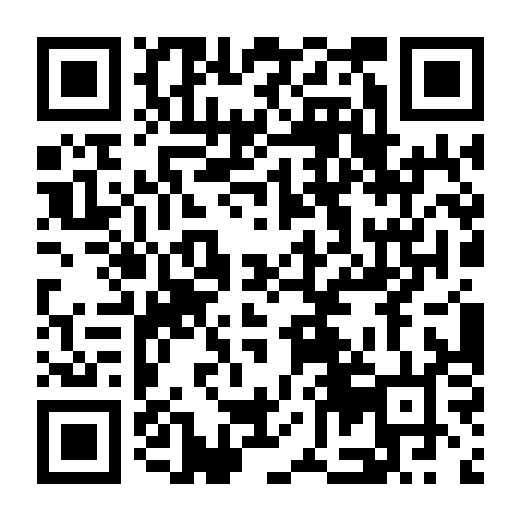

Smart Kennel Scanning
Tap the kennel. Open the right care workflow.
Kennel One combines 33 mm NFC tags and QR codes with kennel records so staff can move faster and document care in the right place.
One tap to the kennel record.
Program an NFC tag for a kennel or run. When scanned, Kennel One opens the assigned location so the handler can review care, mark duties complete, and access the right records.
The Kennel One app is on the Apple App Store under its existing listing; the new public name is subject to Apple review.

Open the App Store Listing
Scan this live code or use the Apple App Store button below.Download the App
Workflow
Designed for speed.
1
Program
Assign the writable NFC tag to the correct kennel/run inside Kennel One.
2
Tap or Scan
Staff taps the NFC tag or scans the QR code from the Home shortcut.
3
Complete Care
Open the correct care list, mark duties, and save records for that location.
Hardware
Build your facility kit.
Choose individual tags, tag-and-holder packages, or multi-kennel bundles.